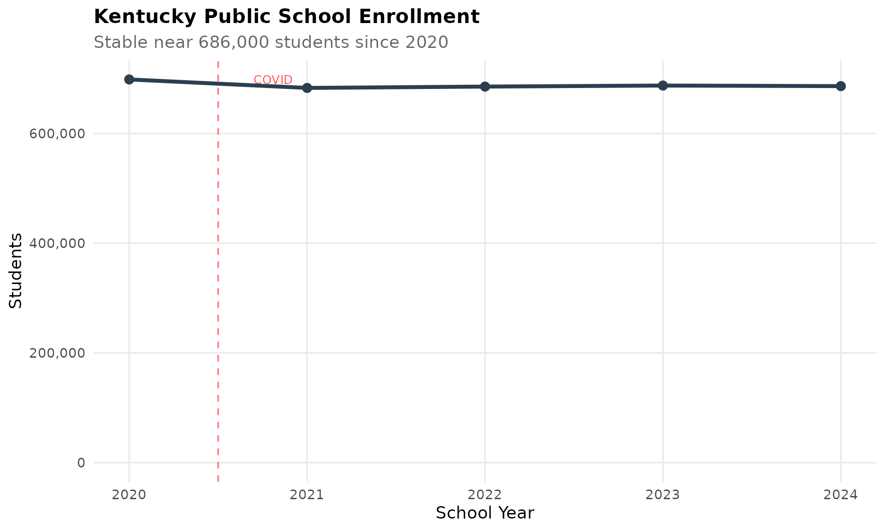
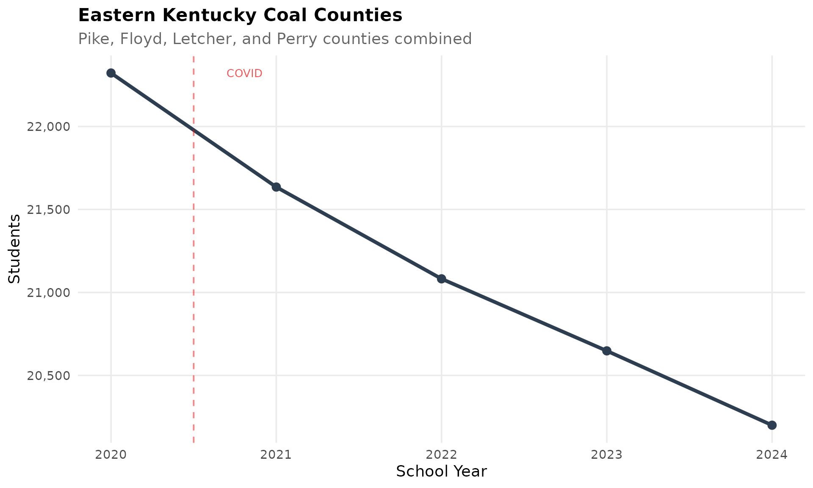
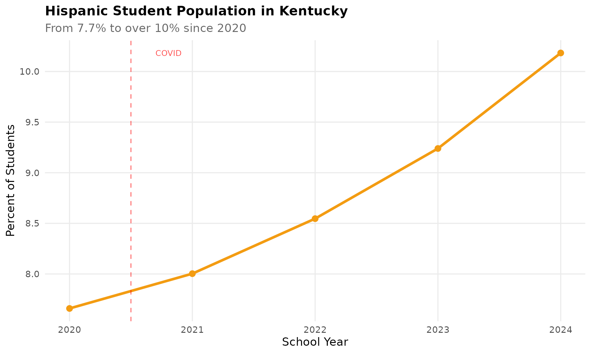
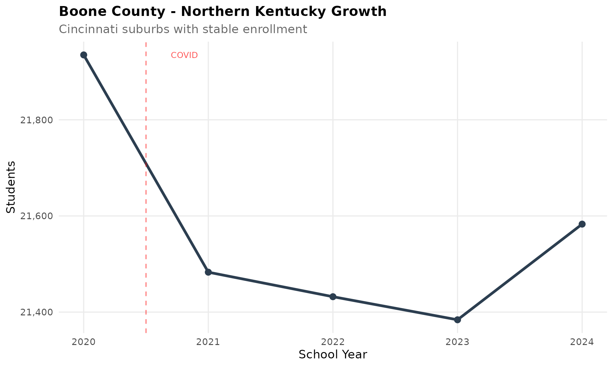
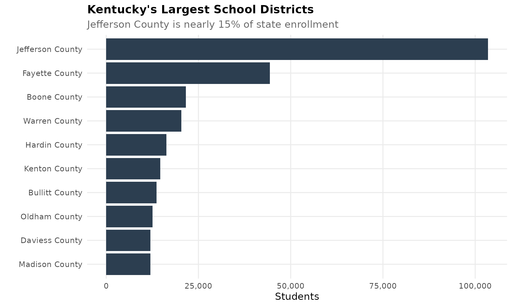
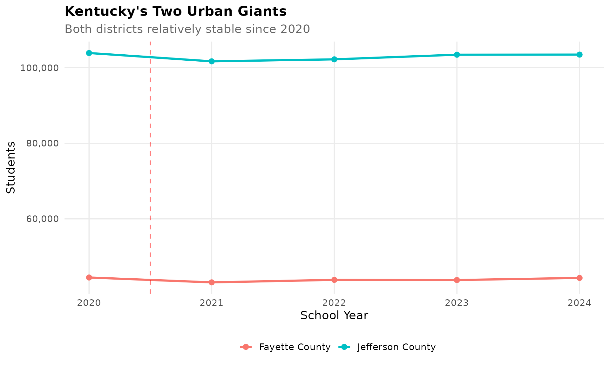
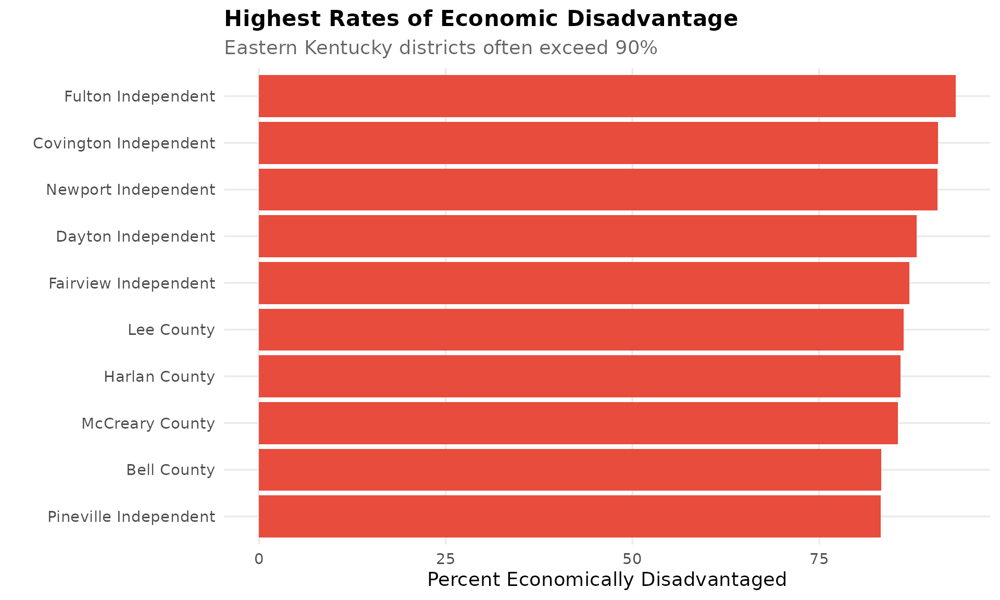
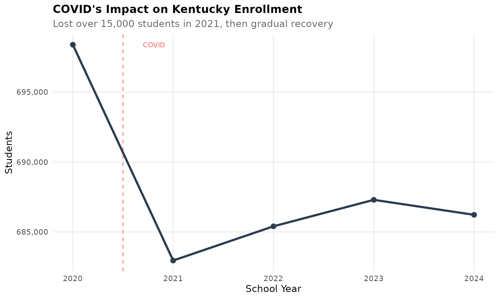
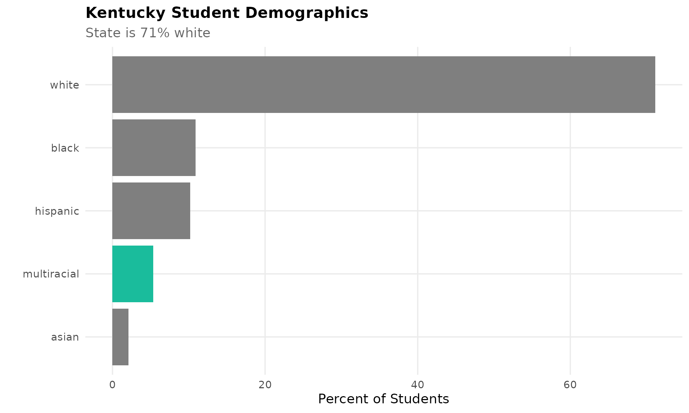
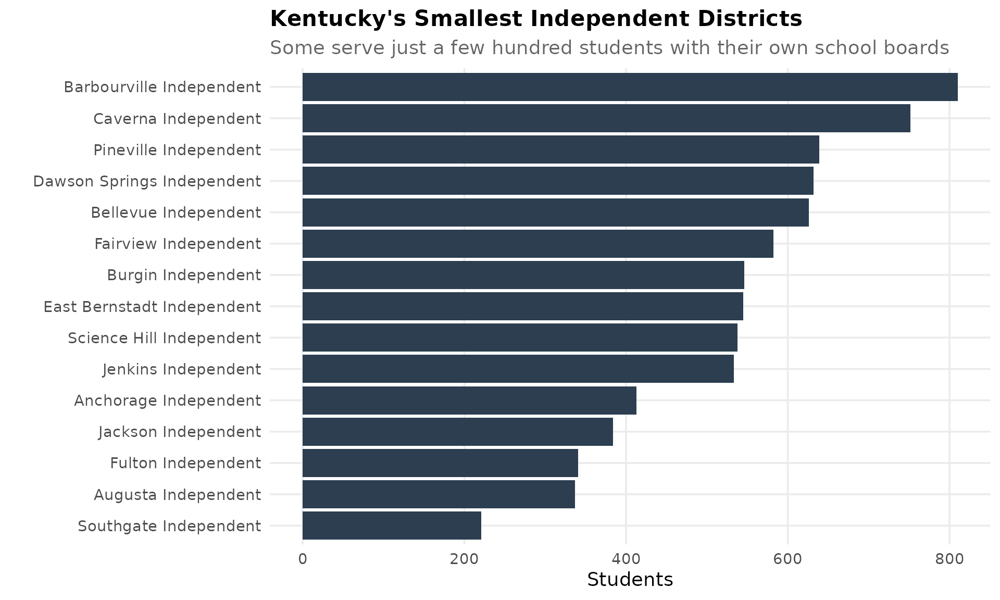

theme_readme <- function() {
theme_minimal(base_size = 14) +
theme(
plot.title = element_text(face = "bold", size = 16),
plot.subtitle = element_text(color = "gray40"),
panel.grid.minor = element_blank(),
legend.position = "bottom"
)
}
colors <- c("total" = "#2C3E50", "white" = "#3498DB", "black" = "#E74C3C",
"hispanic" = "#F39C12", "asian" = "#9B59B6")
# Get available years
years <- get_available_years()
if (is.list(years)) {
max_year <- years$max_year
min_year <- years$min_year
} else {
max_year <- max(years)
min_year <- min(years)
}
# Fetch data
enr <- fetch_enr_multi((max_year - 9):max_year)
key_years <- seq(max(min_year, 2000), max_year, by = 5)
if (!max_year %in% key_years) key_years <- c(key_years, max_year)
enr_long <- fetch_enr_multi(key_years)
enr_current <- fetch_enr(max_year)1. Kentucky enrollment is slowly declining
Kentucky lost 25,000 students since 2015. The decline accelerated during COVID and hasn’t reversed.
state_trend <- enr %>%
filter(is_state, grade_level == "TOTAL", subgroup == "total_enrollment")
ggplot(state_trend, aes(x = end_year, y = n_students)) +
geom_line(linewidth = 1.5, color = colors["total"]) +
geom_point(size = 3, color = colors["total"]) +
scale_y_continuous(labels = comma, limits = c(0, NA)) +
labs(title = "Kentucky Public School Enrollment",
subtitle = "Lost 25,000 students since 2015",
x = "School Year", y = "Students") +
theme_readme()
2. Eastern Kentucky is emptying out
Appalachian coal counties have lost half their students since 2000. Pike County, once 15,000 students, is now under 9,000.
appalachian <- c("Pike County", "Floyd County", "Letcher County", "Perry County")
appalachia <- enr_long %>%
filter(is_district, grepl(paste(appalachian, collapse = "|"), district_name, ignore.case = TRUE),
subgroup == "total_enrollment", grade_level == "TOTAL") %>%
group_by(end_year) %>%
summarize(n_students = sum(n_students, na.rm = TRUE), .groups = "drop")
ggplot(appalachia, aes(x = end_year, y = n_students)) +
geom_line(linewidth = 1.5, color = colors["total"]) +
geom_point(size = 3, color = colors["total"]) +
scale_y_continuous(labels = comma) +
labs(title = "Eastern Kentucky Coal Counties",
subtitle = "Pike, Floyd, Letcher, and Perry counties combined",
x = "School Year", y = "Students") +
theme_readme()
3. The Hispanic population has quadrupled
Hispanic students went from 2% to 9% of enrollment since 2000. Lexington, Louisville, and central Kentucky drive this growth.
hispanic <- enr_long %>%
filter(is_state, grade_level == "TOTAL", subgroup == "hispanic")
ggplot(hispanic, aes(x = end_year, y = pct * 100)) +
geom_line(linewidth = 1.5, color = colors["hispanic"]) +
geom_point(size = 3, color = colors["hispanic"]) +
labs(title = "Hispanic Student Population in Kentucky",
subtitle = "Quadrupled from 2% to 9% since 2000",
x = "School Year", y = "Percent of Students") +
theme_readme()
4. Boone County is Northern Kentucky’s growth story
Boone County in the Cincinnati suburbs has added 5,000 students since 2010. It’s now the third-largest district in Kentucky.
boone <- enr %>%
filter(is_district, grepl("Boone County", district_name, ignore.case = TRUE),
subgroup == "total_enrollment", grade_level == "TOTAL")
ggplot(boone, aes(x = end_year, y = n_students)) +
geom_line(linewidth = 1.5, color = colors["total"]) +
geom_point(size = 3, color = colors["total"]) +
scale_y_continuous(labels = comma) +
labs(title = "Boone County - Northern Kentucky Growth",
subtitle = "Cincinnati suburbs driving Kentucky's growth",
x = "School Year", y = "Students") +
theme_readme()
5. Jefferson County is Kentucky’s giant
Jefferson County Public Schools (Louisville) serves 95,000 students, nearly 15% of Kentucky’s entire enrollment. It’s larger than the next five districts combined.
top_districts <- enr_current %>%
filter(is_district, grade_level == "TOTAL", subgroup == "total_enrollment") %>%
arrange(desc(n_students)) %>%
head(10) %>%
mutate(district_label = reorder(district_name, n_students))
ggplot(top_districts, aes(x = district_label, y = n_students)) +
geom_col(fill = colors["total"]) +
coord_flip() +
scale_y_continuous(labels = comma) +
labs(title = "Kentucky's Largest School Districts",
subtitle = "Jefferson County is nearly 15% of state enrollment",
x = "", y = "Students") +
theme_readme()
6. Fayette County is growing while Louisville shrinks
While Louisville shrinks, Fayette County (Lexington) has grown to 42,000 students. Kentucky’s two urban districts are on opposite trajectories.
urban <- enr %>%
filter(grepl("Fayette County|Jefferson County", district_name, ignore.case = TRUE),
is_district, grade_level == "TOTAL", subgroup == "total_enrollment")
ggplot(urban, aes(x = end_year, y = n_students, color = district_name)) +
geom_line(linewidth = 1.2) +
geom_point(size = 2.5) +
scale_y_continuous(labels = comma) +
labs(title = "Kentucky's Two Urban Giants",
subtitle = "Lexington growing while Louisville shrinks",
x = "School Year", y = "Students", color = "") +
theme_readme()
7. 60% of students are economically disadvantaged
Kentucky has one of the highest rates of economic disadvantage in the nation. In some eastern Kentucky districts, 90%+ of students qualify.
econ_top <- enr_current %>%
filter(is_district, grade_level == "TOTAL", subgroup == "econ_disadv") %>%
arrange(desc(pct)) %>%
head(10) %>%
mutate(district_label = reorder(district_name, pct))
ggplot(econ_top, aes(x = district_label, y = pct * 100)) +
geom_col(fill = colors["black"]) +
coord_flip() +
labs(title = "Highest Rates of Economic Disadvantage",
subtitle = "Eastern Kentucky districts often exceed 90%",
x = "", y = "Percent Economically Disadvantaged") +
theme_readme()
8. COVID hit Kentucky hard
Kentucky lost 20,000 students between 2020 and 2022. Unlike some states, Kentucky has not recovered.
covid_years <- enr %>%
filter(is_state, grade_level == "TOTAL", subgroup == "total_enrollment",
end_year >= 2018)
ggplot(covid_years, aes(x = end_year, y = n_students)) +
geom_line(linewidth = 1.5, color = colors["total"]) +
geom_point(size = 3, color = colors["total"]) +
geom_vline(xintercept = 2020, linetype = "dashed", color = "red", alpha = 0.5) +
scale_y_continuous(labels = comma) +
labs(title = "COVID's Impact on Kentucky Enrollment",
subtitle = "Lost 20,000 students and hasn't recovered",
x = "School Year", y = "Students") +
theme_readme()
9. Kentucky is 78% white
Kentucky remains one of the least diverse states. Louisville and Lexington have significant minority populations; most rural districts are 95%+ white.
demo <- enr_current %>%
filter(is_state, grade_level == "TOTAL",
subgroup %in% c("white", "black", "hispanic", "asian", "multiracial")) %>%
arrange(desc(pct)) %>%
mutate(subgroup_label = reorder(subgroup, pct))
ggplot(demo, aes(x = subgroup_label, y = pct * 100)) +
geom_col(aes(fill = subgroup)) +
coord_flip() +
scale_fill_manual(values = c("white" = colors["white"], "black" = colors["black"],
"hispanic" = colors["hispanic"], "asian" = colors["asian"],
"multiracial" = "#1ABC9C")) +
labs(title = "Kentucky Student Demographics",
subtitle = "State remains 78% white",
x = "", y = "Percent of Students") +
theme_readme() +
theme(legend.position = "none")
10. Independent districts are a Kentucky tradition
Kentucky has both county-wide districts (like Jefferson County) and independent city districts (like Bowling Green Independent). Some independent districts serve just 1,000 students but maintain their own school boards.
independent <- enr_current %>%
filter(grepl("Independent", district_name, ignore.case = TRUE),
grade_level == "TOTAL", subgroup == "total_enrollment") %>%
arrange(n_students) %>%
head(15) %>%
mutate(district_label = reorder(district_name, n_students))
ggplot(independent, aes(x = district_label, y = n_students)) +
geom_col(fill = colors["total"]) +
coord_flip() +
scale_y_continuous(labels = comma) +
labs(title = "Kentucky's Smallest Independent Districts",
subtitle = "Some serve just 1,000 students with their own school boards",
x = "", y = "Students") +
theme_readme()